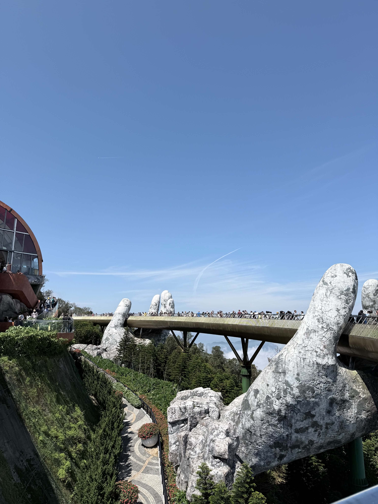
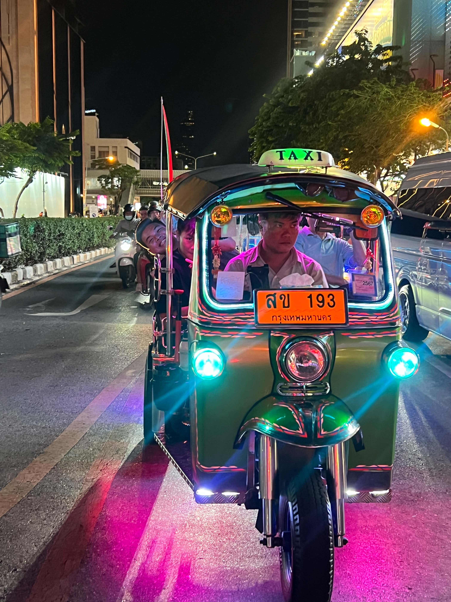
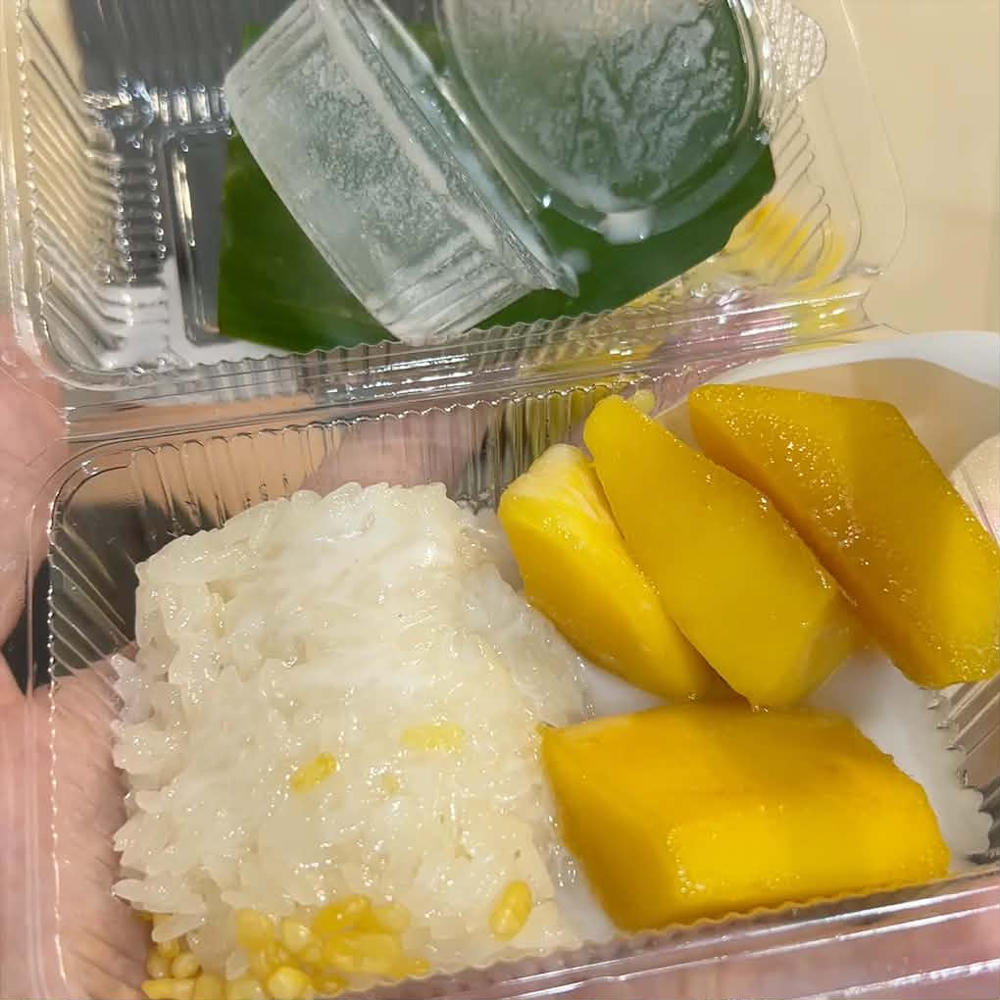

If I could take a vacation, I would visit Vietnam, Thailand, and Canada because each place offers a different experience. In Vietnam, I would go to Ba Na Hills near Da Nang, where the Golden Bridge is located on Nui Chua Mountain inside Sun World Ba Na Hills. I like this place because it has beautiful mountain views and a very unique design. In Thailand, I would enjoy the busy city life, temples, and local culture. In Canada, I would enjoy the peaceful environment, clean cities, and natural scenery.

Original photo by Xuan Vinh To.
In Vietnam, I would visit Ba Na Hills, walk on the Golden Bridge, and enjoy the cool weather on the mountain. In Thailand, I would try riding a tuk-tuk because it is one of the most popular and fun ways to travel around the city. I would also visit temples, walk through local markets, and try street food. In Canada, I would spend time exploring the city, enjoying the view, and relaxing in a different environment. Some activities I would enjoy are:

Original photo by Xuan Vinh To.
Food would be one of the best parts of this trip. In Da Nang, I would try local dishes such as Quang noodles, which is made with wide rice noodles, a small amount of rich broth, and toppings like shrimp, pork, chicken, or eggs. I would also try Bun Cha Ca, a fish cake noodle soup with a light but flavorful broth. Another dish I would want to eat is Banh Xeo and Nem Lui, which are popular and tasty foods in central Vietnam. In Thailand, I would like to try pad thai, mango sticky rice, and Thai milk tea. In Canada, I would enjoy local food and also try different foods from many cultures.

Original photo by Xuan Vinh To.